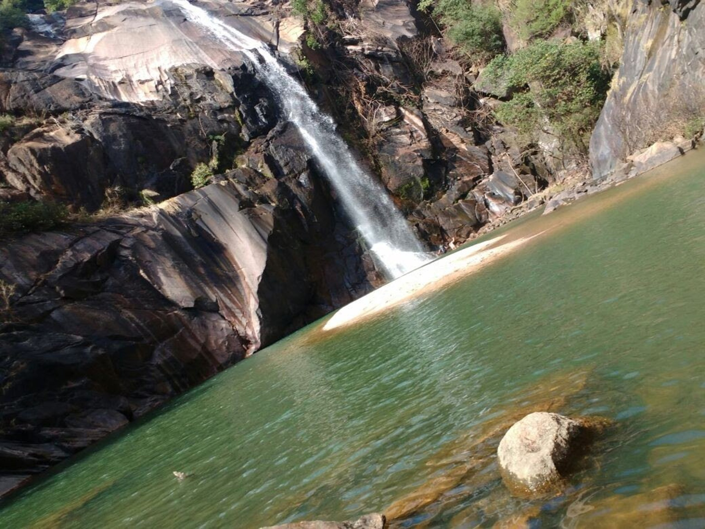

Cachoeira da Chave

O Parque da Cachoeira da Chave, em Votorantim, é outro exemplo de investimentos em turismo.
Votorantim é um município no interior do estado de São Paulo, no Brasil, mais conhecido como terra das capivaras. A cidade localiza-se na Região Metropolitana de Sorocaba e também pertence à Mesorregião Macro Metropolitana Paulista e à Microrregião de Sorocaba. Localiza-se a oeste da capital do estado, distando desta cerca de 108 km. Sua população segundo estatísticas do Instituto Brasileiro de Geografia e Estatística de 2019 era de 122 480 habitantes, sendo, então, o 68º município mais populoso do estado de São Paulo, além de ser a quarta mais populosa cidade da Região Metropolitana de Sorocaba, atrás apenas de Sorocaba, Itu e Itapetininga. Ocupa uma área de 183,998 km².
O Parque da Cachoeira da Chave, em Votorantim, é outro exemplo de investimentos em turismo.
Parque pequeno com lago, várias nascentes e aves, além de plantas e árvores de diversas regiões brasileiras.
Bamberg, uma das cervejarias mais premiadas do Brasil, abre suas portas para um tour especial todos os sábados
Um parque muito bonito com vegetação nativa e uma nascente. Possui trilha e alguns animais.